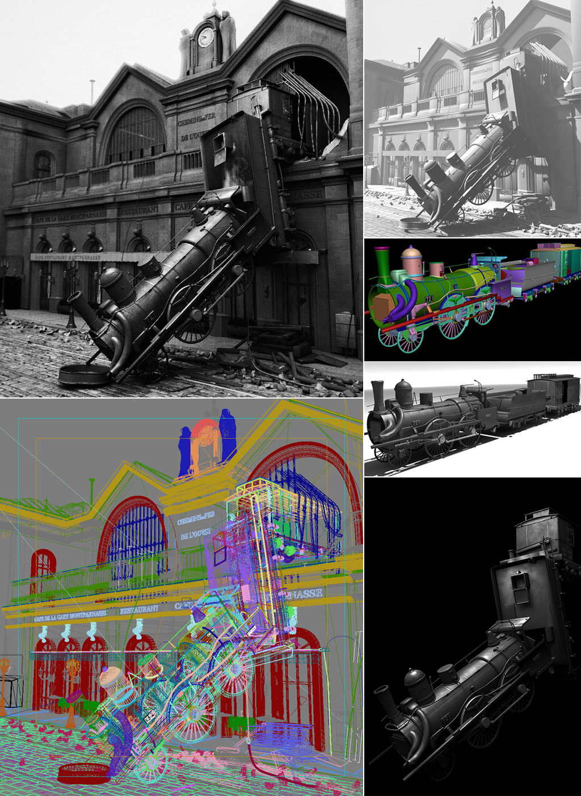
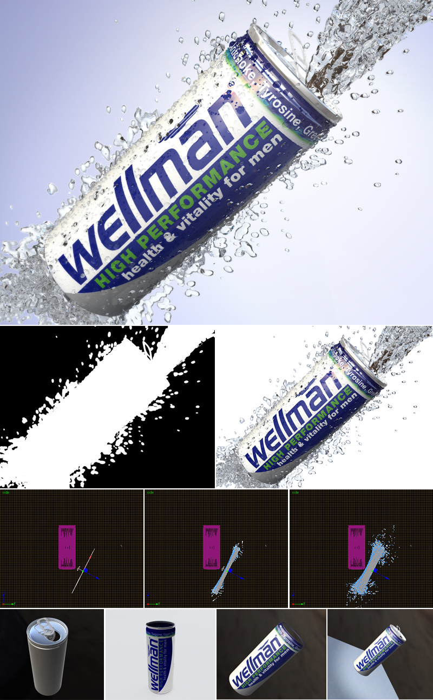
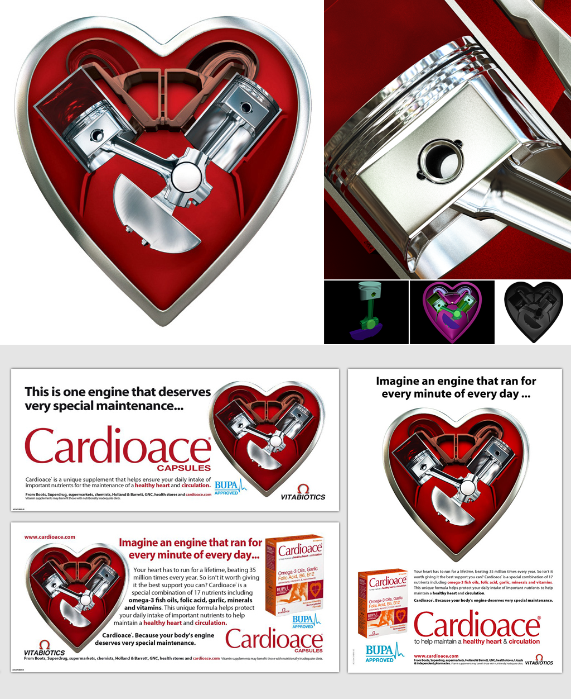

TCharts
A JavaScript charting library based off of Raphael and built for Timetric
JSurface3D
A realtime interactive 3D volatility surface built with Three.js for OpenGamma
Code snippit from JSurface3D
OpenGamma Analytics
A realtime risk & analytics application for capital markets.
jQuery, Handlebars, Three.js & Flot.
No frameworks or other utility libraries.
Watchr
A web scraper built using Node, PhantomJS, Vagant, Chef, AWS, Postgres, Redis, Socket.io, Backbone, RequireJS etc
3D Graphics
Pre 2006 3Ds max 5/6


